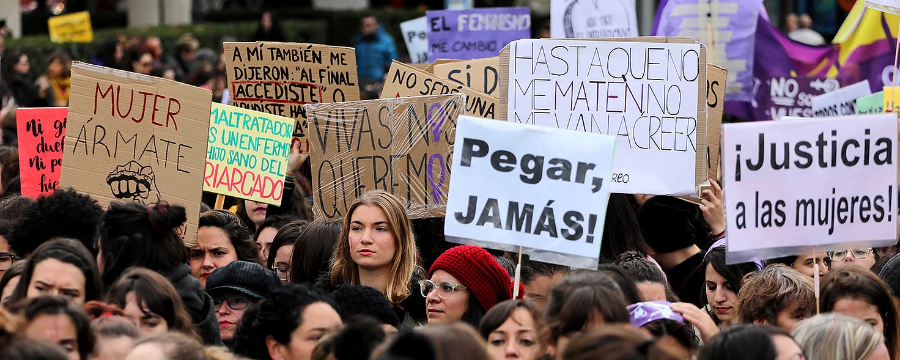
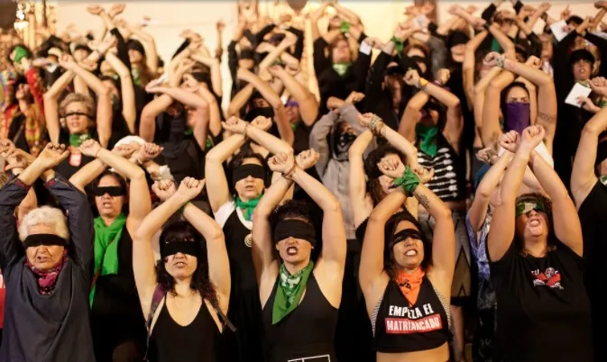
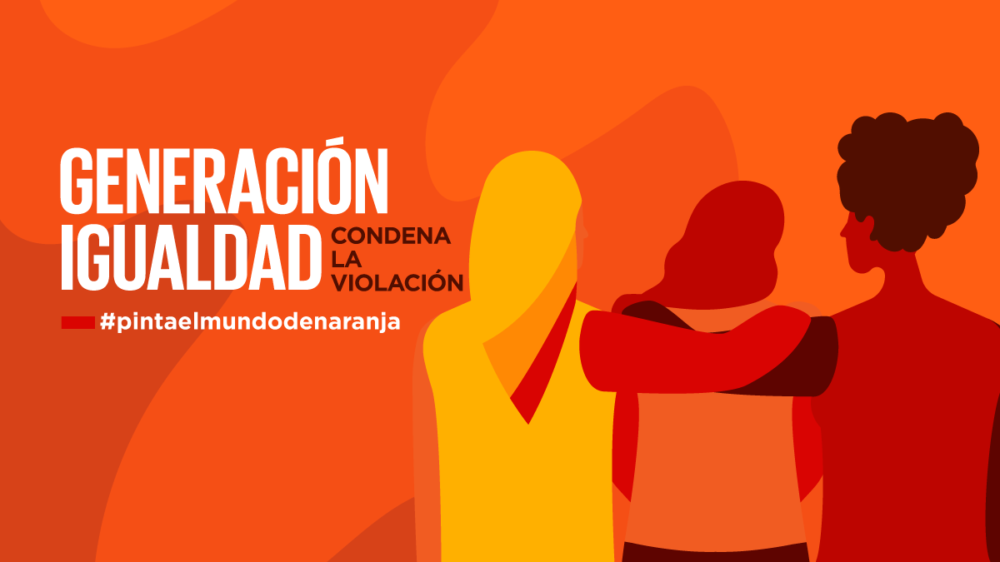
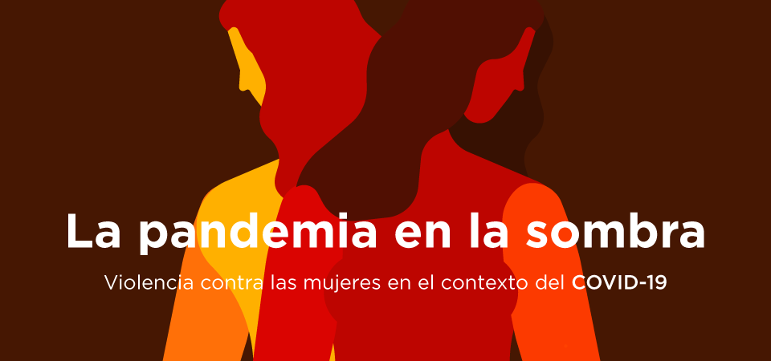
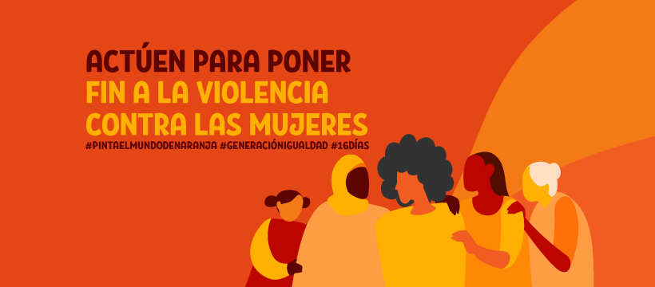
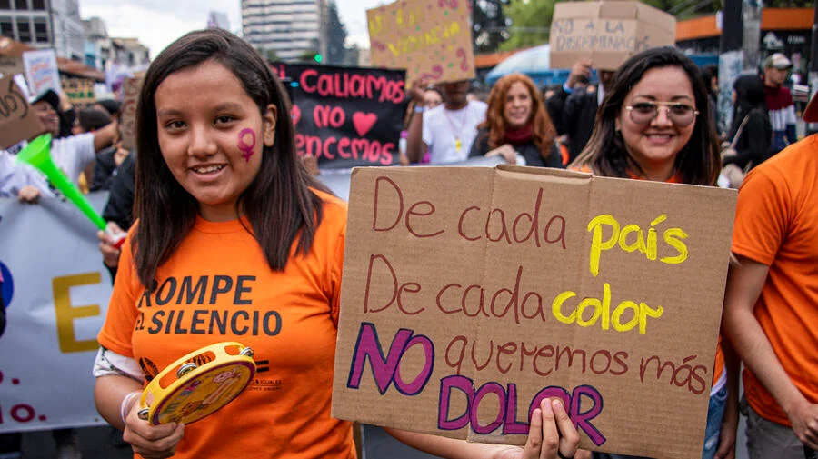

<!doctype html>
<html lang="en">
  <head>
    <meta charset="utf-8">
    <meta name="viewport" content="width=device-width, initial-scale=1">
    <title>Centro Comunitario</title>
    <link href="https://cdn.jsdelivr.net/npm/bootstrap@5.3.2/dist/css/bootstrap.min.css" rel="stylesheet" integrity="sha384-T3c6CoIi6uLrA9TneNEoa7RxnatzjcDSCmG1MXxSR1GAsXEV/Dwwykc2MPK8M2HN" crossorigin="anonymous">
    <link rel="stylesheet" href="./CSS/style.css">
</head>
  <body >
    


    <script src="https://cdn.jsdelivr.net/npm/bootstrap@5.3.2/dist/js/bootstrap.bundle.min.js" integrity="sha384-C6RzsynM9kWDrMNeT87bh95OGNyZPhcTNXj1NW7RuBCsyN/o0jlpcV8Qyq46cDfL" crossorigin="anonymous"></script>
  </body>
</html>


    <!--ADAPTAR LO DE ACONTINUACIÓN AL CENTRO COMUNITARIO-->
    
    <header class="header">Header</header>
    <nav class="navbar">Navbar</nav>
    <aside class="sidebar">Sidebar</aside>
    <article class="main">Articulo</article>

    <section id="news">
        <h1>NOTICIAS</h1>
        <div class="container">
            <div class="newscard">
                <a href="https://ss.puebla.gob.mx/prevencion/informate/item/2657-dia-mundial-para-la-eliminacion-de-la-violencia-contra-las-mujeres"
                title="Día Mundial para la Eliminación de la violencia contra las Mujeres">
                    
                </a>
                <h2>Día Mundial para la Eliminación de la violencia contra las Mujeres</h2>
            </div>
            <div class="newscard">
                <a href="https://blogs.iadb.org/administracion-publica/es/los-datos-para-combatir-la-violencia-contra-las-mujeres/"
                title="Aún necesitamos más y mejores datos para combatir la violencia contra las mujeres">
                  
                </a>
                <h2>Aún necesitamos más y mejores datos para combatir la violencia contra las mujeres</h2>
            </div>
            <div class="newscard">
                <a href="https://www.es.amnesty.org/en-que-estamos/blog/historia/articulo/violencia-de-genero/"
                title="La larga lucha contra la violencia de género en España">
                    
                </a>
                <h2>La larga lucha contra la violencia de género en España</h2>
            </div>
            <div class="newscard">
                <a href="https://belemdopara.org/lucha-contra-la-violencia-hacia-la-mujer/" 
                title="Lucha contra la violencia hacia la mujer">
                    
                </a>
                <h2>Lucha Contra la Violencia Hacia la Mujer</h2>
            </div>
            <div class="newscard">
                <a href="https://www.unwomen.org/es/what-we-do/ending-violence-against-women"
                title="Poner fin a la violencia contra las mujeres">
                    
                </a>
                <h2>Poner fin a la violencia contra las mujeres</h2>
            </div>
            <div class="newscard">
                <a href="https://www.unwomen.org/es/news/in-focus/in-focus-gender-equality-in-covid-19-response/violence-against-women-during-covid-19"
                title="La pandemia en la sombra: violencia contra las mujeres durante el confinamiento">
                    
                </a>
                <h2>La pandemia en la sombra: violencia contra las mujeres durante el confinamiento</h2>
            </div>
            <div class="newscard">
                <a href="https://iila.org/es/jornada-internacional-para-la-erradicacion-de-la-violencia-contra-la-mujer-iila-y-su-compromiso-con-el-ods5/"
                title="Jornada internacional para la erradicación de la violencia contra la mujer: IILA y su compromiso con el ODS5">
                    
                </a>
                <h2>Jornada internacional para la erradicación de la violencia contra la mujer: IILA y su compromiso con el ODS5</h2>
            </div>
            <div class="newscard">
                <a href="https://mexico.unfpa.org/es/news/onu-m%C3%A9xico-%C2%A1pongamos-fin-la-violencia-contra-las-mujeres-ya"
                title="ONU MÉXICO: ¡Pongamos fin a la violencia contra las mujeres YA!">
                    
                </a>
                <h2>ONU MÉXICO: ¡Pongamos fin a la violencia contra las mujeres YA!</h2>
            </div>
            <div class="newscard">
                <a href="https://www.acnur.org/violencia-de-genero"
                title="Violencia de género">
                    
                </a>
                <h2>Violencia de género</h2>
            </div>
        </div>
    </section>

    <div class="gallery">
        <div class="gallery_item">
            
        </div>
        <div class="gallery_item">
            
        </div>
        <div class="gallery_item">
            
        </div>
    </div>


    <footer class="footer">
        
    </footer>

</body>
</html>